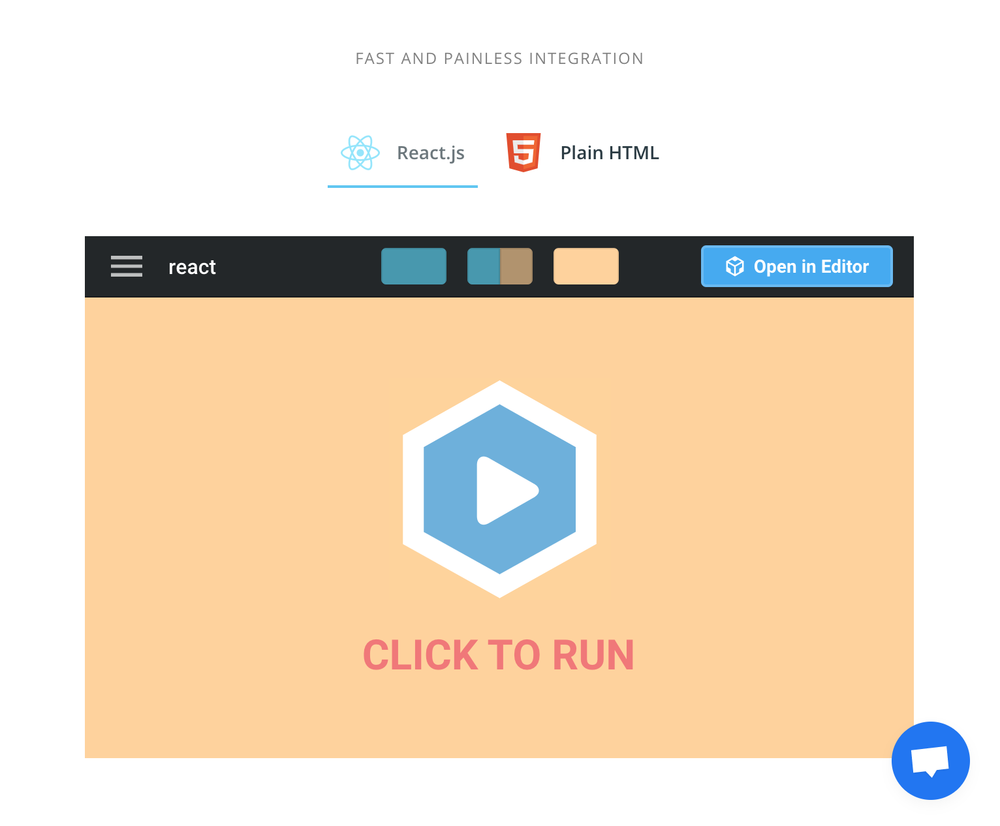

Blinkloader
Front-end development for a SEO automation platform

Context
In November 2017 I joined Blinkloader, a startup then dedicated to image optimization services. Since then the business focus of the company shifted multiple times, now focusing on the systematic SEO setup and maintenance for other startups.
I gained valuable experience and contributed to the web app development and solving various UI edge cases, including responsiveness and cross-browser design. The following examples will feature UI implemented for the changing product.
Overview
Some of the interesting contributions I made while working in Blinkloader can be outlined as follows:
- Responsive web layouts design and developement
- Loading states in apps
- Development of reusable React.js components
Responsive web layouts design and development
Problem
Developing responsive web site and application was important in the company. The main challenge in building responsive pages in Blinkloader was to use few but clear styles.
Solution
I used the tachyons CSS system, which promoted functional CSS approach and allowed to change most of the essential UI components characteristics (widths, heights, positions) with applying short classes. Ability to use flexbox for the website was useful as well, allowing to change minor properties, such as the direction of the flex element (row, column) to suit different screens.
The main focus in creating responsive layouts was to maintain initial desktop design aesthetic and make texts legible on small screens. Sometimes I had to introduce new elements, such as dropdown menu instead of the sidebar on the small screen. Hamburger button was avoided to provide immediate access to main pages categories. For tablet screens, I often had to develop another view to save space.
These and other layouts were enabled by using as short lines of CSS classes, similar to this one:
class="flex flex-row-ns flex-nowrap-l flex-wrap flex-column"This line, for example, shifts from placing elements in a row to a wrappable row for medium-sized screens and typical 1-column layout for small screens.
Loading states in apps
Problem
Working with APIs requires to account for the cases when there is no data yet, the data is loading, the data is loaded or could not be loaded/was empty.
Solution
While working in Blinkloader, we used various solutions for implementing loading states in an app.
One of them was the usage of the SVG placeholders with animated gradient, to create an illusion of faster loading. I used react-content-loader to build the previews for all the elements in the dashboard, preventing “jumps” on the page when some data is loaded.
Another one used in the Website Scanner right now is to create a separate loading state for each component, accounting for its specifics.
We have upgraded our Website Scanner 🔎 New features in the thread ⬇️
— Blinkloader (@blinkloader) 22 марта 2019 г.
Credits to @halfhalftravel for a beautiful portal. pic.twitter.com/7AelqDlyfb
Hey all! We are happy to showcase one of the new features we've been working on 🤓
— Blinkloader (@blinkloader) 25 января 2019 г.
☄️ Drop an SVG file to our Express CDN app
⚡️ Get lightning fast optimized SVG
🔥 Download or use our CDN link with generated HTML tagshttps://t.co/gqSy5Bj9pH pic.twitter.com/qtuGKPLfat
Reusable components
Problem
Reusable components is the very basis of React.js development. However, just creating reusable components in the project folder may invoke chaos and still bring up inconsistencies in design and functionality of a website or an app.
Solution
To maintain consistent design, we used the storybook tool to specifically develop and test some common components, when the design was known beforehand.
Initially, we used it with React.js, then with Preact.js. Below is the list of reusable components I made for the first dashboard iteration. The design was a joint team effort. One of the challenges for this iteration of components was to build tabs component without using Javascript, only using CSS.
This is a demo of the CSS only tab component applied on
Overall result
Come visit blinkloader.com and give the beta a try